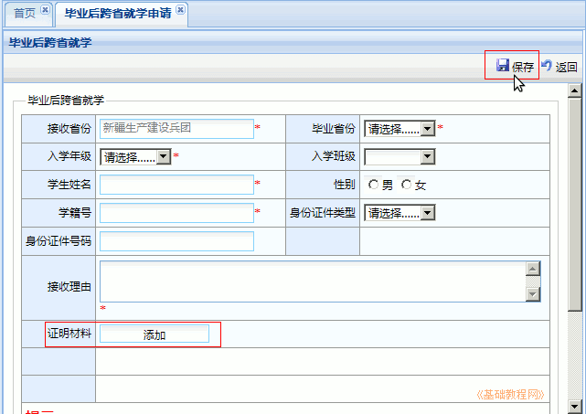
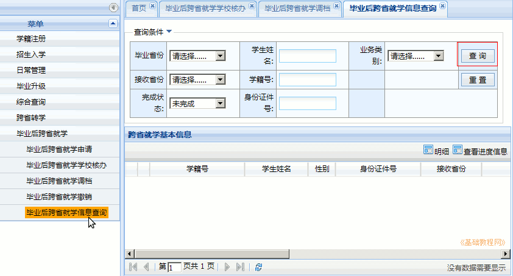

全国中小学生学籍管理系统操作指南
作者：TeliuTe 来源：基础教程网
三十一、毕业后跨省就学 返回目录 下一课毕业后跨省就学跟跨省转学类似，需要四个单位的核办才能完成；
1、毕业后跨省就学
1）依次点“学籍管理－毕业后跨省就学－毕业后跨省就学申请”，出来申请面板；
2）点右边的“申请”按钮，出来学生信息面板，红星必填，点“添加－浏览”打开申请表照片，最后点右上角“保存”返回；

3）再在左侧栏点“毕业后跨省就学学校核办”，选择一个学生，点右上角“核办”；
4）在核办意见里选择“同意”，点右上角“确定”按钮，如果不同意，则需注明原因；
5）点左侧栏“跨省转学查询”，右边默认会列出未完成的学生列表，注意看转学状态和待核办单位；

6）跨省转学申请，经过上级审核通过，转出省审核通过，对方学校通过，对方学校主管通过后，会提示一条“可以调档”，
在首页点击提示，或者在左边选择“毕业后跨省就学调档”，可以调取学生档案，完成录取；
本节学习了毕业后跨省就学的基础知识，如果你成功地完成了练习，请继续学习下一课内容；
本教程由TeliuTe制作|著作权所有
基础教程网：http://teliute.org/
美丽的校园……
转载和引用本站内容，请保留作者和本站链接。